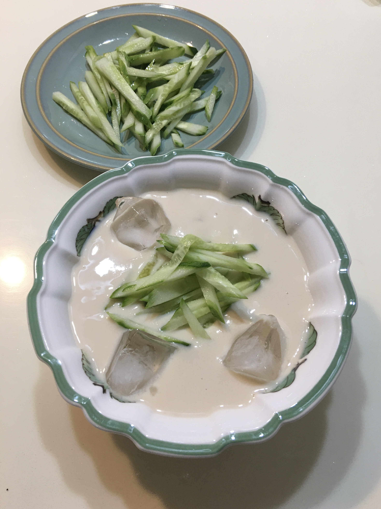
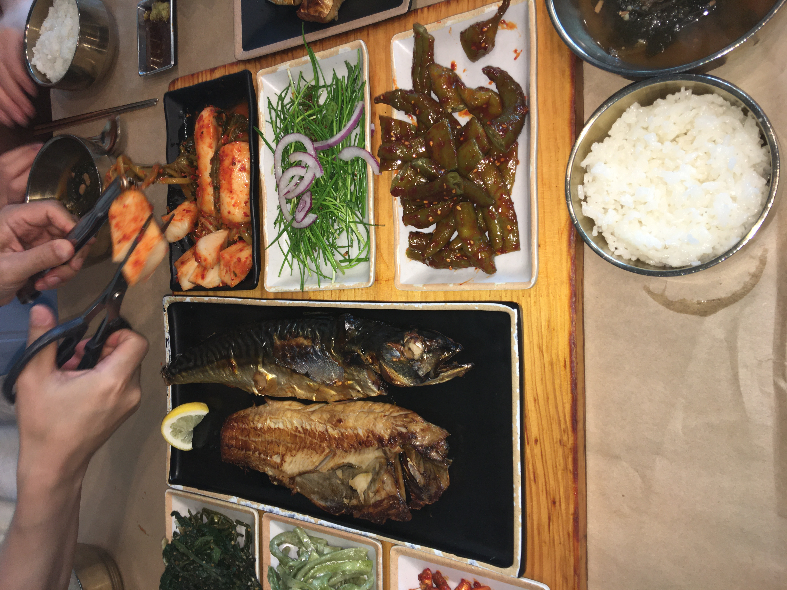
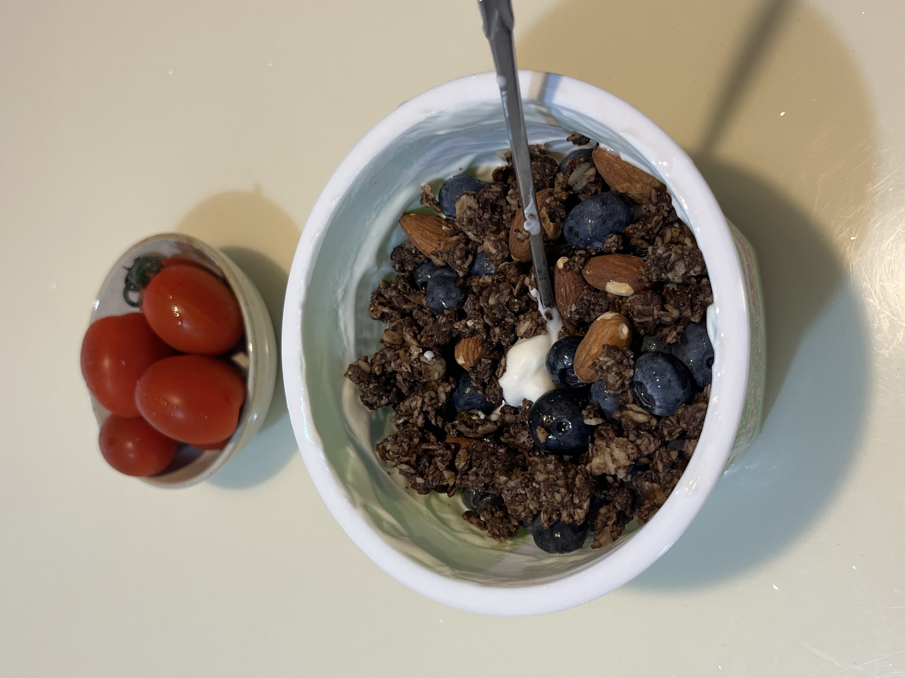

저를 가깝게 아는 사람이 아니라면 잘 모르는 사실이지만
저는 엄청나게 음식을 사랑한답니다.
먹는 행위와 음식 그 자체에도 관심이 많고
사랑하는 사람들과 함께 맛있는 음식을 먹으며 시간을 보내는 것이
제게는 최고로 행복해요.
최근에는 다이어트 때문에 음식 조절을 하고 있지만(뻥) ... ^^
저의 2025년 선정, 여름 최애 음식 3개를 알려드리겠습니다~!
(2025년 8월 기준, 한식 > 중식 > 양식 > 일식 순으로 좋아함)
1. 콩국수

올 여름은 유독 작년보다 뜨겁게 느껴지네요.
이토록 더웠던 적이 없었다고 믿고 싶을 정도로 7월 한 달은 더위에 허덕이며 지냈고
밖에서 숨을 쉬는 것조차 버겁게 느껴졌습니다.
8월에서야 제가 좋아하는 제철 음식을 먹으며 여름을 시원하게 보내고 있습니다.
김혜원의 엄청난 발전..!!! 바로 오이를 즐기게 되었단 사실!
맛있는 콩국수집을 다녀온 뒤로 콩친자마냥 콩물에 빠져있습니다.
걸쭉하고 고소한 맛의 콩물을 특히 좋아하는데 생크림처럼 묽은 콩물은 별로에요.
송송 썬 오이 한 주먹과 얼음 3조각이면 여름의 찌는 더위를 시원하게 말소시킬 수 있는 용기가 생깁니다.
2. 생선구이

여름 제철음식은 아니지만 요즘 빠져있는 음식 중 하나입니다. 바로 생선구이
부모님을 데리고 유명하고 인기많은 생선구이집을 갔었는데 임연수와 삼치, 고등어가 너무 맛있어서
정신없이 뼈뜯던 기억이 나네요.
학기 중에는 생선을 먹을 기회가 없어서 물고기가 귀한데 집에서는 먹을 수 있으니
더 찾게 되는 걸까요..ㅎ
단백질도 풍부하고 또끈한 밥 위에 얹어 먹으면 최고!
3. 그릭요거트와 그래놀라

저속노화 식단 중 빠질 수 없는 음식, 그릭요거트
트렌드세터인 제가 저속노화 식단에 빠질 수 없죠. 아침대용으로 먹기 좋고
포만감 가득하며 단백질도 챙길 수 있단 말이죠.
꼭 무가당 그릭요거트여야 돼요!
<추천하는 조합>
1. 그릭요거트 + 사과 + 소금후추 + 올리브유
2. 그릭요거트 + 반숙란 + 소금후추 + 올리브유
3. 그릭요거트 + 견과류/베리류
혈당도 잡을 수 있는 건강한 아침식사로 추천드려요.